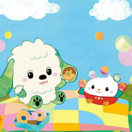

ルーレットを回すと、止まったマスの動画が始まります。ホーム画面に入れると、全画面で使えます。
LINE などのアプリの中のブラウザからは、ホーム画面に追加できません。 画面の右上（または右下）の … や 矢印 のボタンから 「Safariで開く」（Android は「ブラウザで開く」）を選んでください。
動画は YouTube の無料動画を再生します（通信が必要です）。見守りタイマーは20分で、解除は大人の長押しです。